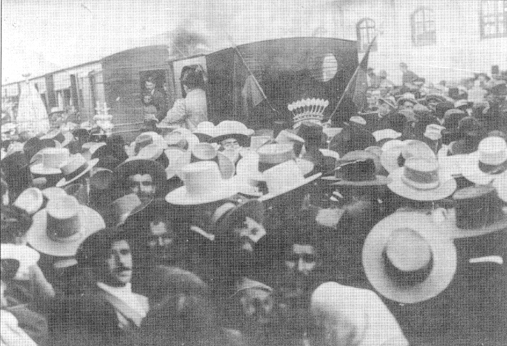
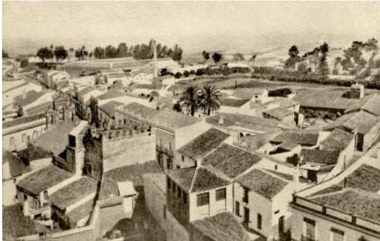
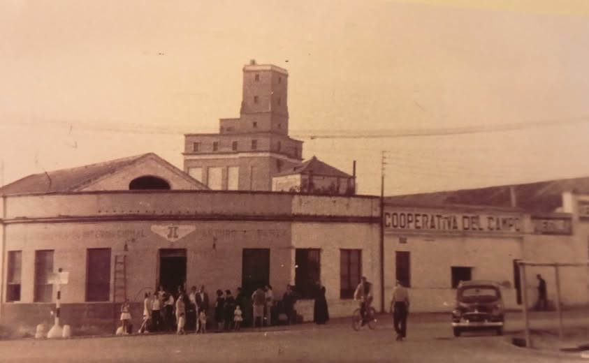
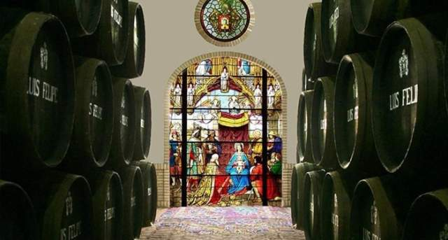
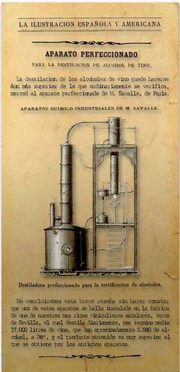
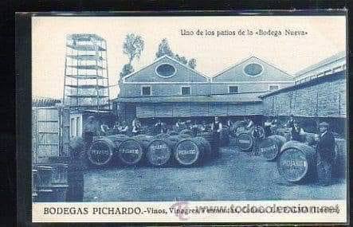

Bodegas activas hoy
Firmas bodegueras que quedan activas en La Palma del Condado.
Patrimonio bodeguero · La Palma del Condado
Análisis y catalogación para la puesta en valor del patrimonio bodeguero de La Palma del Condado.
Datos clave
Firmas bodegueras que quedan activas en La Palma del Condado.
Superficie agrícola que el estudio compara con el 5,7% registrado en 2019.
Instalado por Nicolás Gómez para la destilación en España.
Dato de la investigación sobre el proceso de decadencia bodeguera.
Publicación digital
La web integra la información recopilada durante el trabajo académico para favorecer la difusión y accesibilidad de los resultados: fichas de catalogación, documentación gráfica y cartografía elaborada mediante QGIS.
Línea de tiempo
Cinco fases históricas y la continuidad actual ordenan la lectura de La Palma del Condado: origen urbano, consolidación vinícola, industrialización, edad de oro, crisis y permanencias.
S. XIV-XV
La concesión de la Real Feria en 1398 consolidó a La Palma como cruce de caminos para el comercio regional.

S. XVI-XVIII
La economía local se especializó en la industria vinícola y la Bodega de la Viga aparece como una de las bodegas más antiguas de Andalucía.

1871-1880
El sistema de destilación instalado por Nicolás Gómez y la línea Sevilla-Huelva impulsan la modernización del Condado.

1877-1924
El ferrocarril y la filoxera favorecen la construcción de grandes "catedrales del vino".

1925-1990
El Reglamento de Trabajo de 1947, la caída del consumo y el cooperativismo de 1957 marcan el cierre de muchas bodegas históricas.

Hoy
Las firmas activas reorientan su actividad hacia producciones premium, venta directa, catas, turismo y eventos culturales.

“El vino de La Palma del Condado es reconocido como muy bueno para la salud y nada nocivo por ser elaborado con las mejores uvas.”
Carta dirigida al Gobernador de Santo Domingo, citada en López Robledo (2010:12)
Exploración
Cartografía QGIS
Las bodegas identificadas se georreferencian mediante QGIS para visualizar su localización dentro del tejido urbano y facilitar la consulta cartográfica.
Ver mapa completo

Fundada por Celestino Verdier Martín sobre la destilería de Nicolás Gómez.
Ver ficha
Gran complejo bodeguero situado frente a la estación ferroviaria.
Ver ficha
Conjunto formado por naves como El Cine, El Molino, La Nueva y La Vinagrera.
Ver ficha

Complejo de la calle del Pilar con chimenea, torre alambique y naves de crianza.
Ver ficha